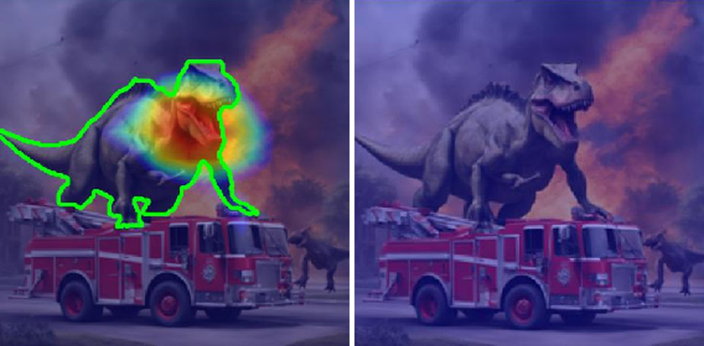
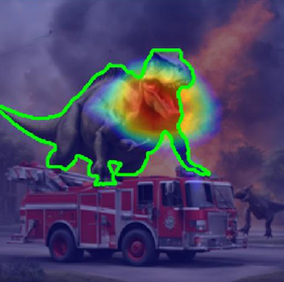
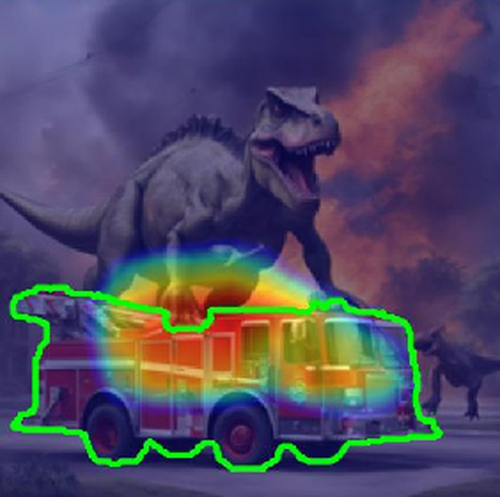
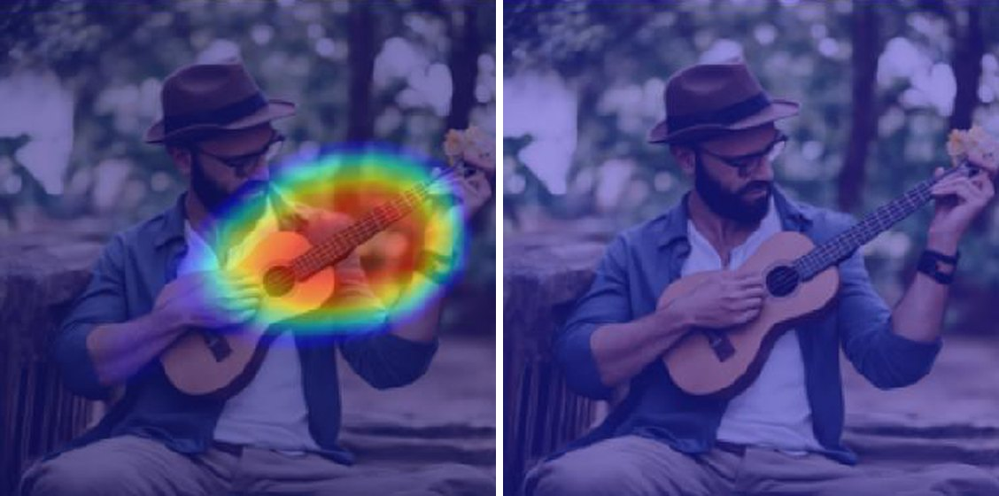
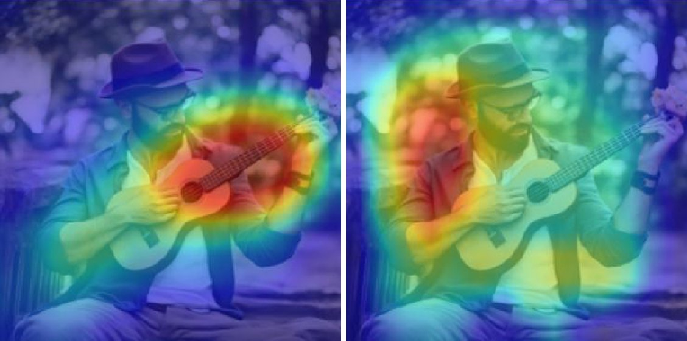

I study how models find the source of a sound in an image, and what they should do when nothing in the image is making it.
I work at UPF in Barcelona on Audio-Visual Sound Source Localization in images and video. Before the PhD I spent 3+ years building ML systems in industry.


One image, five audios. Pick what the model hears:
The audio is the dinosaur, and the map lands on the dinosaur.
Maps from SSL-SaN, BMVC 2025. The green outline marks the object that makes the sound.
Physicist turned AI researcher.
I'm Xavier, a PhD candidate at Universitat Pompeu Fabra (Barcelona), working on Audio-Visual Sound Source Localization within the IMVA group under Prof. Gloria Haro and co-advised by Prof. Magdalena Fuentes (NYU). My research asks: can models learn to localize sound in an image, even when the audio is silence, noise, or from offscreen? Beyond images, I work on extending localization to video, on the modality gap between audio and visual representations, and on training-free approaches that combine audio language models with promptable segmenters.
My path has been unconventional. I started with a BS in Theoretical Physics (UB), followed by two master's degrees: Intelligent Interactive Systems (UPF) and Astrophysics & Cosmology (UAB). Before the PhD, I spent 3+ years as a Data Scientist and AI Engineer in industry (DRIVING01, Schneider Electric), building NLP systems and predictive models. A visiting scholar stay at NYU MARL (Sep to Dec 2024) deepened my research collaborations and led to an ICASSP 2025 publication.
My PhD was funded by an FPI doctoral fellowship from Spain's Ministry of Science (2023 to 2026) within the MuVAU research project. When not doing research, I teach Calculus II labs at UPF.



Code for the BMVC 2025 paper: a self-supervised localization model trained with silence and noise, so it stays quiet when the audio does not match the image.
Extended test set and metrics to evaluate localization models with negative audio: silence, noise and offscreen sounds.
Run the SLAVC localization method on your own image and audio pairs, straight from the IPOL article page.
Universitat Pompeu Fabra, Barcelona
Researching audio-visual sound source localization in the IMVA group. Advisors: Gloria Haro (UPF) and Magdalena Fuentes (NYU). FPI doctoral scholarship (2023 to 2026). Part of the MuVAU project (Spanish Ministry of Science).
NYU MARL, New York
Collaborated with Magdalena Fuentes on sound localization research. Culminated in ICASSP 2025 publication.
Schneider Electric, Barcelona
Led predictive modeling using Salesforce data to assess offer acceptance probabilities. Contributed to AI conversational agent development. Served as global AI consultant.
Universitat Autònoma de Barcelona (UAB)
DRIVING01, Barcelona
Built AI conversational agents for real estate and Liceu using NLP and neural networks. Later developed ML predictive models for Chupa Chups, COMSA Service, and real estate. Created Power BI dashboards.
Universitat Pompeu Fabra (UPF)
Universitat de Barcelona (UB)
Universitat Pompeu Fabra, Barcelona
January to March of 2022, 2023, 2024, 2025 and 2026
Teaching assistant for laboratory sessions and seminars. Topics: multivariable functions, domain and image, curves and surfaces, partial derivatives, tangent subspaces, Taylor approximation, multiple integration, and gradient descent optimization.
All co-supervised with Gloria Haro.
Interested in collaboration, research, or just want to chat about audio-visual ML? Reach out.
Download CV